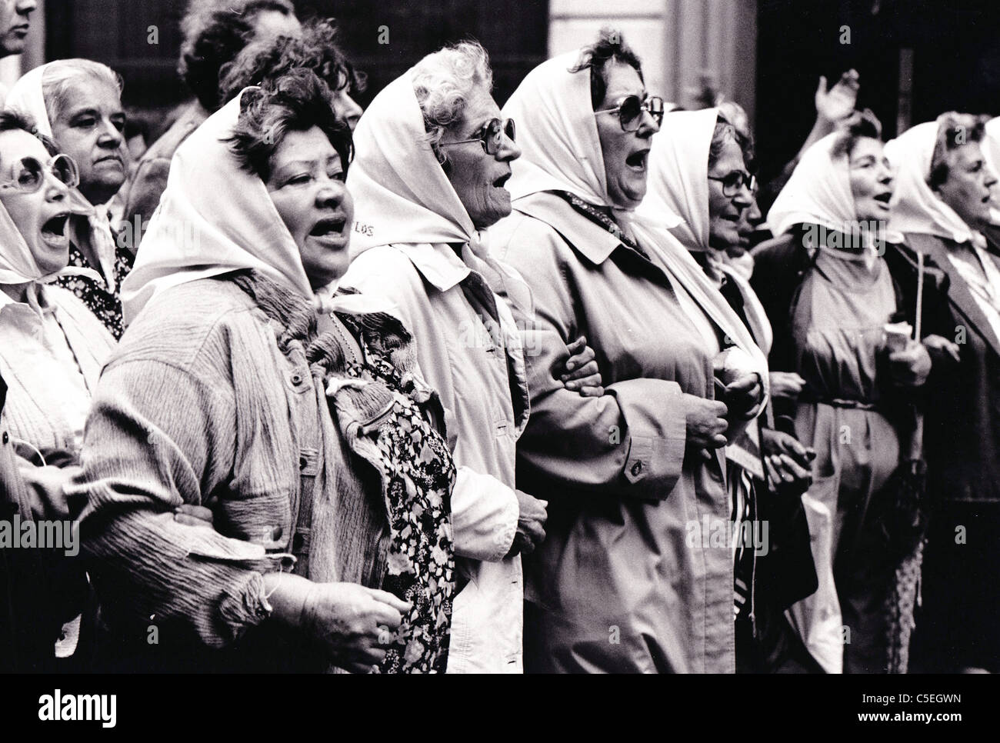

Why Dissent?
Dissent is central to checking the power of the status quo and developing a more just society.

Mothers of the Plaza De Mayo,protesting the
dissappearance of their children by the Argentinian Government.
Women had organized to gather, holding a vigil, while also trying to learn what had happened to their
adult children during the 1970s and 1980s. They began to gather for this every Thursday, from 1977-2006
at the Plaza de Mayo in Buenos Aires, in front of the Casa Rosada presidential palace, in public
defiance of the government's law against mass assemblies. Wearing white headscarves to symbolize the
diapers of their lost children, embroidered with the names and dates of birth of their
offspring, now young adults, the mothers marched in twos in solidarity to protest the denials of their
children's existence or their mistreatment by the military regime. Despite personal risks, they wanted
to hold the government accountable for the human rights violations which were committed in the Dirty War
where as many as 30,000 people “disappeared”. Most are assumed to have been taken on "Death Flights"
over the Atlantic and pushed out.